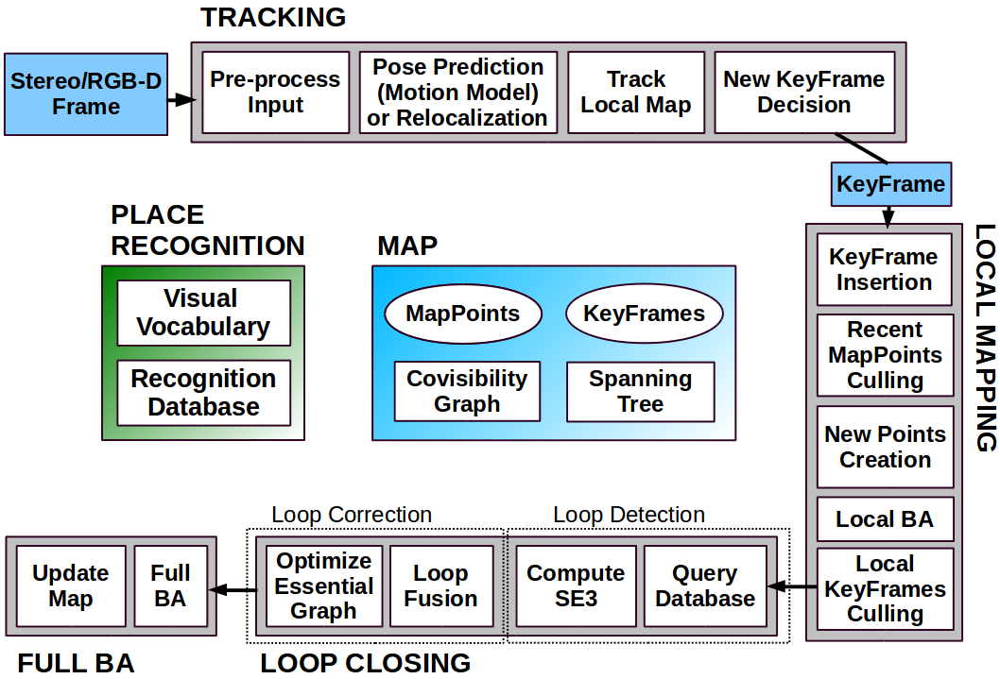
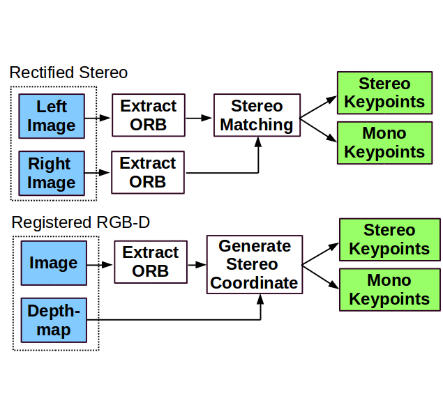
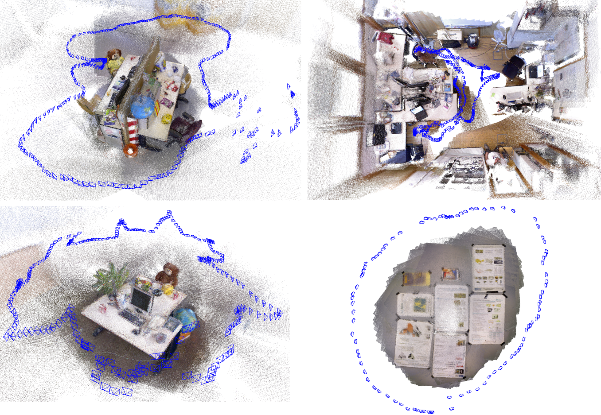

курс по SLAM https://www.youtube.com/watch?v=sxu6_YnZca8
http://openslam.org
Расстояние до обьекта можно получить:
1) Из движения
2) Дальномер
3) Стереопара
3) Изменяя фокусное расстояние
Актуальность см. диссертацию
В связи с ростом популярности и снижением стоимости
систем трехмерного технического
зрения, в робототехнике стала актуальной задача локализации мобильного
робота в трехмерном
пространстве. Новые системы трехмерного технического зрения [3] позволяют
получить
объемную модель сцены с высокой точностью. 3D-SLAM обладает рядом
преимуществ:
1) известен полный вектор положения и ориентации мобильного робота в
пространстве,
что расширяет круг выполняемых роботом задач;
2) измерения, полученные от сенсора, не зависят от неровностей
подстилающей
поверхности, по которой движется мобильный робот;27
3) возможна 3D-реконструкция помещения, в котором находится робот, что
дает более
полную картину обстановки для человека-оператора, а также позволяет
выполнять
более сложные операции в автоматическом режиме.
Из недостатков алгоритмов данного типа можно выделить ограниченное
быстродействие,
связанное с большим потоком информации от сенсора и необходимостью его
обработки.
Рассмотрим возможные варианты решения этой проблемы.
см. диссертацию
Еще одна особенность алгоритмов SLAM данного типа – это возможность
замыкания циклов,
т.е. распознавание уже пройденного участка карты с последующей релаксацией
всей карты
вдоль траектории робота.
bag-of-words - метод классификации изображений
Фактически bag-of-words использует в качестве описания гистограмму вхождений отдельных шаблонов в изображение. Корни идеи восходят к задаче классификации текстов, для решения которой используют описания в виде гистограмм вхождений в документ слов из заранее составленного словаря. ссылка
https://en.wikipedia.org/wiki/Bag-of-words_model_in_computer_vision
http://www.intuit.ru/studies/courses/10622/1106/lecture/18032?page=1
Алгоритм RANSAC часто используется в компьютерном зрении, например, для решения задачи сопоставления изображений ссылка
Отфильтровать дескрипторы только по дистанции недостаточно для
достижения высокой точности определения схожих объектов на
изображениях. Если объект переместился на сцене или снят с другого
ракурса,
то при применении трансформации «наложения» n точек одного изображения
на соответствующие по ближайшему соседу n точек другого, можно выявить
особенности, не относящиеся к общему объекту и тем самым уменьшить
количество ложно определенных связей.
Схема работы алгоритма RANSAC заключается в циклическом
повторении поиска матрицы трансформации 𝐻 между случайно выбираемыми
четырьмя особыми точками 𝑠𝑖 на одном изображении и соответствующе им
четырём точкам на втором: ссылка
Хорошая статья про детекторы и особые точки https://habrahabr.ru/post/244541/
ДЕскрипторы ORB и BRISK https://dspace.spbu.ru/bitstream/11701/3991/1/st010290.pdf
http://www.racurs.ru/wiki/index.php/Обзор_методов_обнаружения_характерных_точек
Характерная точка (точка интереса) — точка изображения, обладающая
высокой локальной информативностью. В качестве численной меры
информативности предлагаются различные формальные критерии, называемые
операторами интереса. Оператор интереса должен обеспечивать достаточно
точное позиционирование точки в плоскости снимка. Необходимо также, чтобы
положение точки интереса обладало достаточной устойчивостью к
фотометрическим и геометрическим искажениям изображения, включающим
неравномерные изменения яркости, сдвиг, поворот, изменение масштаба,
ракурсные искажения.
Выделение характерных точек на изображении является начальным этапом в
задаче отождествления. Основным достоинством использования характерных
точек для задач обнаружения являются относительная простота и скорость их
выявления. Кроме того, на изображениях не всегда удается выделить другие
характерные черты (четкие контура или области), в то время как характерные
точки в подавляющем большинстве случаев выделить можно.
Наиболее простым примером характерных точек служат локальные экстремумы
яркости и максимумы среднеквадратичного отклонения (СКО) яркости. Во
многих простых случаях, когда радиометрические и ракурсные искажения
отсутствуют, таких точек бывает вполне достаточно для привязки
изображений. В более сложных случаях необходимо выявить на изображении
точки, используя не только яркостные, но и устойчивые к геометрическим
искажениям признаки. Одним из самых информативных особенностей любого
изображения являются углы, которые повсеместно встречаются на изображениях
зданий (углы крыш, окон), они также присутствуют на аэрофотоснимках
природных ландшафтов.
Детекторы и дескрипторы
http://www.intuit.ru/studies/courses/10622/1106/lecture/18032?page=3
http://www.intuit.ru/studies/courses/10621/1105/lecture/17983?page=2
Результатом работы детекторов является множество особых точек, для
которых необходимо построить математическое описание.
Входными данными дескриптора является изображение и набор особых точек,
выделенных на заданном изображении. Выходом дескриптора является множество
векторов признаков для исходного набора особых точек. Необходимо отметить,
что какие-то дескрипторы решают одновременно две задачи – поиск особых
точек и построение описателей этих точек.
Детектор FAST
Описанные ранее детекторы определяют особых точек на изображении, в
частности, углов, применяя некоторую модель или алгоритм напрямую к
пикселям исходного изображения. Альтернативный подход состоит в том,
чтобы использовать алгоритмы машинного обучения для тренировки
классификатора точек на некотором множестве изображений. FAST-детектор
(Features from Accelerated Test) [ 96 , 109 ] строит деревья решений для
классификации пикселей.
Для каждого пикселя \rho изображения рассматривается окружность с центром в этой точке, которая вписана в квадрат со стороной 7 пикселей (рис. 3.1). Окружность проходит через 16 пикселей окрестности.
Дескриптор SURF (Speeded up Robust Features) [ 14 , 109 ] относится к числу тех дескрипторов, которые одновременно выполняют поиск особых точек и строят их описание, инвариантное к изменению масштаба и вращения. Кроме того, сам поиск ключевых точек обладает инвариантностью в том смысле, что повернутый объект сцены имеет тот же набор особых точек, что и образец.
Дескриптор BRIEF
Цель создания BRIEF-дескриптора (Binary Robust Independent Elementary
Features) [ 22 ] состояла в том, чтобы обеспечить распознавание одинаковых
участков изображения, которые были сняты с разных точек зрения. При этом
ставилась задача максимально уменьшить количество выполняемых вычислений.
Алгоритм распознавания сводится к построению случайного леса (randomize
classification trees) или наивного Байесовского классификатора на
некотором тренировочном множестве изображений и последующей классификации
участков тестовых изображений. В упрощенном варианте может использоваться
метод ближайшего соседа для поиска наиболее похожего патча в тренировочной
выборке. Небольшое количество операций обеспечивается за счет
представления вектора признаков в виде бинарной строки, а как следствие,
использования в качестве меры сходства расстоянии Хэмминга.
ORB представлен в 2011г [1]. В его основе лежит комбинация таких алгоритмов как детектор FAST (Features from Accelerated Segment Test) [4] и дескриптор BRIEF (Binary Robust Independent Elementary Features) [5] с некоторыми улучшениями. ссылка
Ссылки по теме:
Детектроры углов https://habrahabr.ru/post/244541/
SIFT https://habrahabr.ru/post/106302/
SURF http://www.vision.ee.ethz.ch/~surf/eccv06.pdf
https://en.wikipedia.org/wiki/Speeded_up_robust_features
http://docs.opencv.org/3.0-beta/doc/py_tutorials/py_feature2d/py_surf_intro/py_surf_intro.html
http://introlab.github.io/rtabmap/
http://www.pirobot.org/wordpress/rtab-map-saves-the-kidnapped-robot/
https://github.com/felixendres/rgbdslam_v2
http://felixendres.github.io/rgbdslam_v2/
rgbdslam. Данная реализация работает на основе облака точек, которое получено с датчика Kinect. Данный алгоритм также не поддерживается в последних версиях ROS.
http://webdiis.unizar.es/~raulmur/orbslam/
https://128.84.21.199/pdf/1610.06475.pdf
https://github.com/raulmur/ORB_SLAM2
http://ieeexplore.ieee.org/document/7219438/
ORB-SLAM (Oriented FAST and Rotated BRIEF SLAM) – визуальный алгоритм SLAM для моно-камер использующая детектор и дескриптор ORB, covisibility Grapth и bag-of-words оптимизацию. Метод основан на отслеживании ключевых точек, в результате чего, в качестве ключевого кадра выступает изображение с набором ключевых точек вычисленных по методу FAST и найденных на обоих кадрах. В качестве дескриптора ключевых кадров используется метод BRIEF (Binary Robust Independent Elementary Features).
Более эффективной альтернативой дескриптору BRIEF является бинарный дескриптор ORB. ссылка
Про ORB SLAM есть https://habrahabr.ru/company/singularis/blog/277537/ преимущество во времени работы
 
https://vision.in.tum.de/research/vslam/rgbdslam
https://github.com/tum-vision/dvo_slam
http://www2.informatik.uni-freiburg.de/~hornunga/pub/hornung13roscon.pdf
https://github.com/tum-vision/dvo_slam
https://www.youtube.com/watch?v=nbIYC0V7BsA